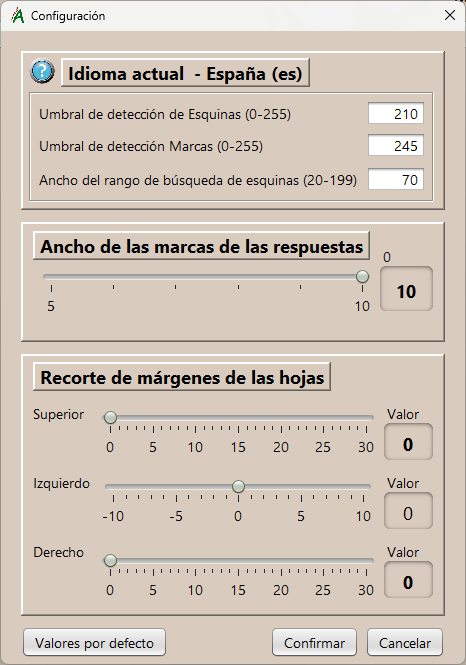

Configuración
Parámetros ajustables para optimizar la captura de las imágenes de los test.
Es importante tener en cuenta que la fiabilidad de los resultados depende fundamentalmente de la calidad del escaneado de las hojas de respuesta de los test. Este escaneado debe hacerse en escala de grises, a una resolución de 300 o 200 dpi. Si se usa un alimentador automático de hojas hay que asegurarse de que las hojas no se descentran en exceso, de lo contrario la aplicación no podrá interpretarlas. Es imprescindible que se distingan perfectamente los puntos de localización de las esquinas del documento. Se admiten los formatos de archivo de imagen habituales, pero conviene que sean "jpg" ó "png", que es con los que se ha probado esta aplicación.
- Umbral de detección de esquinas
Es el punto de lumniosidad, en un rango de 0 a 255, por debajo del cual consideramos haber encontrado una marca de esquina.
Localizar las esquinas del documento es imprescindible para hacer las transformaciones necesarias en el mismo, de manera que luego se puedan localizar las marcas en el punto exacto que corresponda.
- Umbral de detección de marcas
Igual que en el caso anterior, pero ahora aplicable a la detección de marcas de respuesta.
- Ancho del rango de detección de esquinas
Longitud del lado del área, en forma de cuadrado, en la que buscaremos cada una de las cuatro esquinas.
- Ancho de las marcas de las respuestas
Longitud del lado del área, en forma de cuadrado, de las marcas de respuesta. Podemos elegir en un rango de 5 a 10, deslizando el botón.
- Recorte de márgenes
Si la calidad del escaneado de las hojas de respuesta no es muy buena y aparecen zonas oscuras en los márgenes, podemos aplicar un recorte en ellos: superior, izquierdo y derecho; para intentar mejorar el resultado.
Para ello usaremos el botón deslizante correspondiente.
Nota: En casos extremos, si no es posible localizar las esquinas, habrá que repetir el escaneado con mejor calidad.Valores por defecto
Recupera los valores iniciales de la aplicación.
Nota: Los cambios no se guardan si no se pulsa el botón "Confirmar".